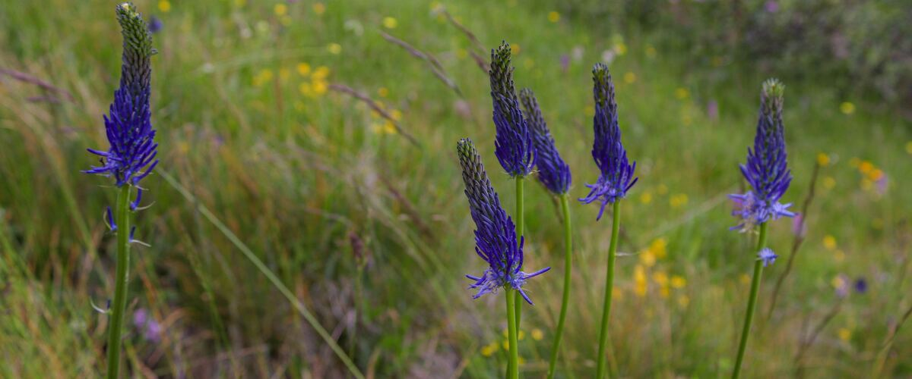

When to plant camas in Goldendale, WA
Plant camas bulbs in Goldendale from Sep 25 – Oct 31. They root over winter and bloom the next spring.
- Difficulty
- Easy
- Sun
- Full sun to light shade
- Spacing
- 4 to 6 inches apart in groups
- Planting depth
- 4 inches deep, pointed end up
- Frost
- Fully hardy; needs winter cold to bloom
- First harvest
- Blooms in April and May
Why these dates
Camas, like other spring bulbs, needs winter cold to bloom, so it goes in during fall once the soil cools. In Goldendale the first fall frost usually comes around September 25.
Inland Northwest. Higher, colder interior valleys. Cold springs and an earlier fall mean a shorter season; quick-maturing varieties pay off.
How to grow camas in Goldendale
- Buy firm bulbs from a garden center or native plant nursery.
- Pick a sunny spot; camas tolerates soil that's wet in winter as long as it dries in summer.
- Plant them Sep 25 – Oct 31, 4 inches deep, pointed end up, 4 to 6 inches apart in groups.
- Water once after planting, then let the rain take over. Skip summer watering; camas is dormant then.
- Harvest: Enjoy the flowers in the garden; they make short-lived cut flowers. Let leaves yellow before cutting them back, and let a few seed heads ripen so they spread.
Key numbers
- Fall, 4 inches deepPlant bulbs
- April–MayBloom
- Tolerates itWinter-wet soil
- None neededSummer water
Top care tip: Let the leaves die back naturally after bloom, and skip summer water once the bulbs go dormant.
Growing notes
What makes the difference in Northwest gardens, in plain language.
Where camas grows wild
Camas once turned Northwest prairies and wet meadows blue each spring, from the Willamette Valley and Puget Sound prairies to mountain meadows east of the Cascades. These meadows are soggy in winter and spring, then bake dry in summer, and camas is built for exactly that cycle: it grows and blooms while the soil is wet and goes dormant underground by midsummer.
Camas bulbs were a major food for Native peoples across the region, who tended and harvested camas meadows for generations. Many of those meadows have since been lost to farming and development.
Growing camas in a garden
Plant bulbs in fall in groups, in sun or light shade. Common camas grows 1 to 2 feet tall; great camas and its selection Blue Danube grow taller and make a bolder show. Camas is a good choice for low, damp spots where tulips would rot, as long as the spot dries out in summer.
After blooming, let the leaves yellow before you cut them back. In a meadow or lawn planting, wait to mow until June. Let some seed heads ripen and scatter: seedlings take a few years to bloom, but plantings slowly spread.
Wildlife value and a safety note
Camas flowers feed native bees and other early pollinators, and restoring camas helps rebuild a habitat that has mostly disappeared. Voles and gophers sometimes eat the bulbs.
Never dig and eat wild camas bulbs. Death camas grows in the same meadows, looks nearly identical without flowers and is highly poisonous. Its flowers are white or cream, but the bulbs can't be safely told apart. Enjoy garden camas for its flowers.
Common questions
When is the last frost in Goldendale, WA?
Typically May 19. In 9 years out of 10, frost is over by June 9. These are 1991–2020 NOAA climate normals for Goldendale.
When does camas bloom in Goldendale?
In spring, usually April and May. West-side gardens bloom first. Enjoy the flowers in the garden; they make short-lived cut flowers. Let leaves yellow before cutting them back, and let a few seed heads ripen so they spread.
How long until I can pick camas?
Blooms in April and May. Enjoy the flowers in the garden; they make short-lived cut flowers. Let leaves yellow before cutting them back, and let a few seed heads ripen so they spread.
Is camas poisonous?
Blue camas itself isn't, but death camas, a different plant that grows in the same places, is highly poisonous and looks almost identical when not in bloom. Never eat wild bulbs; grow camas for its flowers.
When do you plant camas bulbs?
Plant them in fall, about 4 inches deep and 4 to 6 inches apart in groups. They root over winter and bloom the next April and May.
Does camas spread?
Yes, slowly. Bulbs multiply over time and plants reseed if you let the seed heads ripen. Seedlings take a few years to reach blooming size.
Also plant in Goldendale around the same time
Planting dates for camas in nearby areas
- Yakima, WA Oct 1 – Nov 1
- Tri-Cities (Pasco, Kennewick, Richland), WA Oct 1 – Nov 1
- Walla Walla, WA Oct 1 – Nov 1
- Moses Lake, WA Oct 1 – Nov 1
- Ellensburg, WA Sep 25 – Oct 31
- Ephrata and Quincy, WA Oct 1 – Nov 1